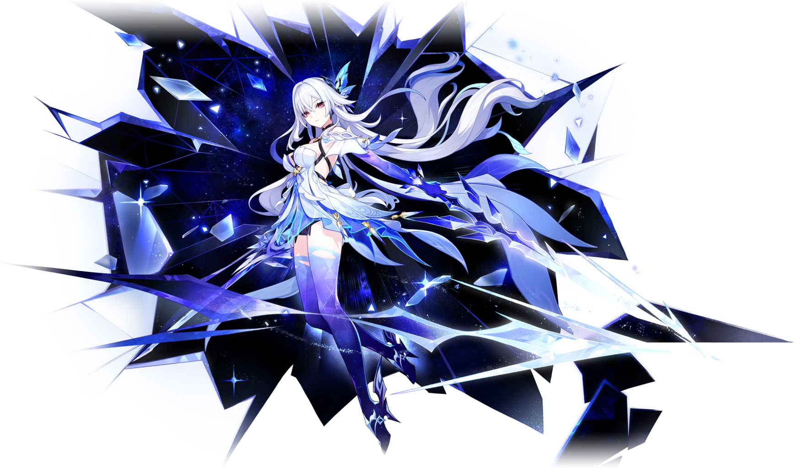

Путник, однажды появившийся в разломе Бездны и у Первозданного моря. Этот одинокий воин обучал Тарталью боевому искусству.

Скирк — загадочная наставница Тартальи, обучившая его боевым искусствам во время его пребывания в Бездне.
Известна под титулом «Звезда пустоты», её созвездие — Кристаллина.
В сложные времена жизнь сама прокладывает себе путь, не нуждаясь ни в похвале, ни в благословении. Жить — это всего лишь инстинкт.